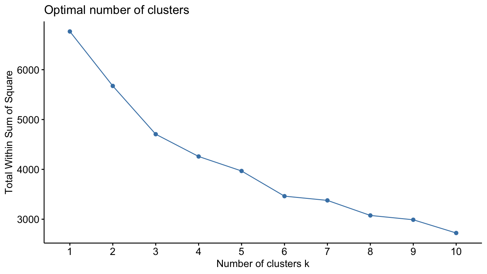
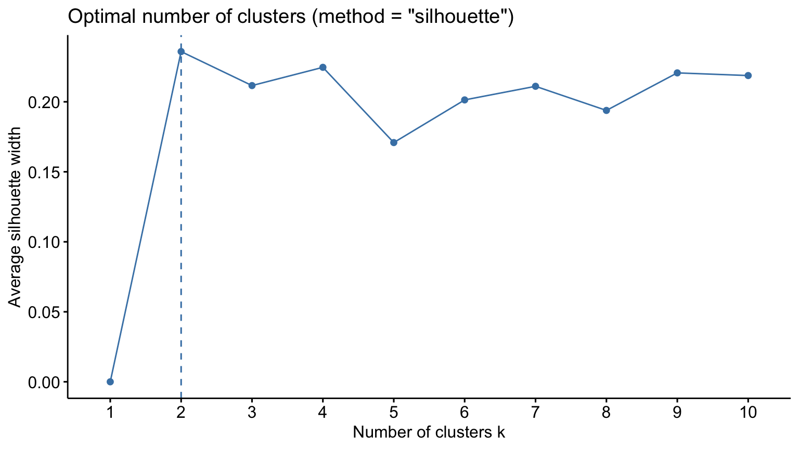
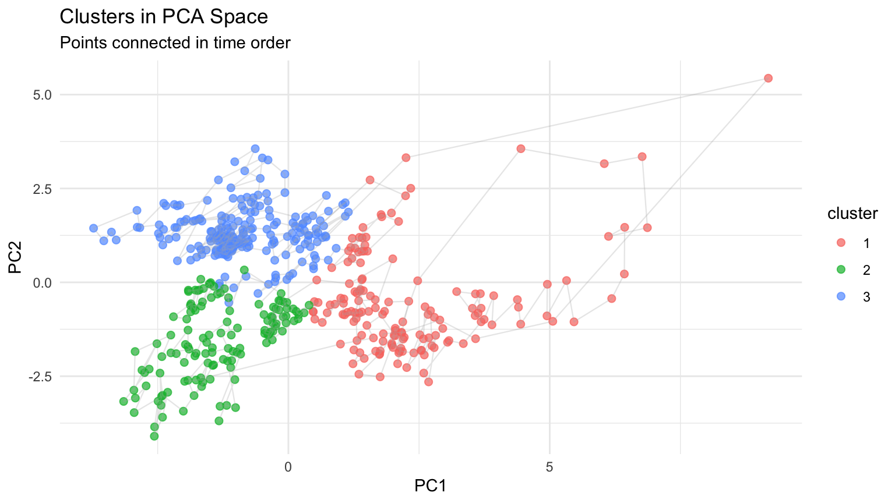
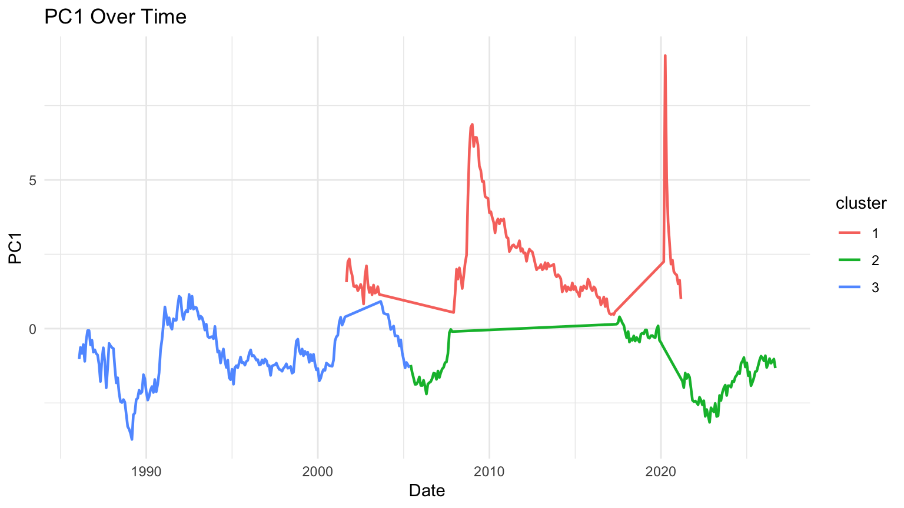
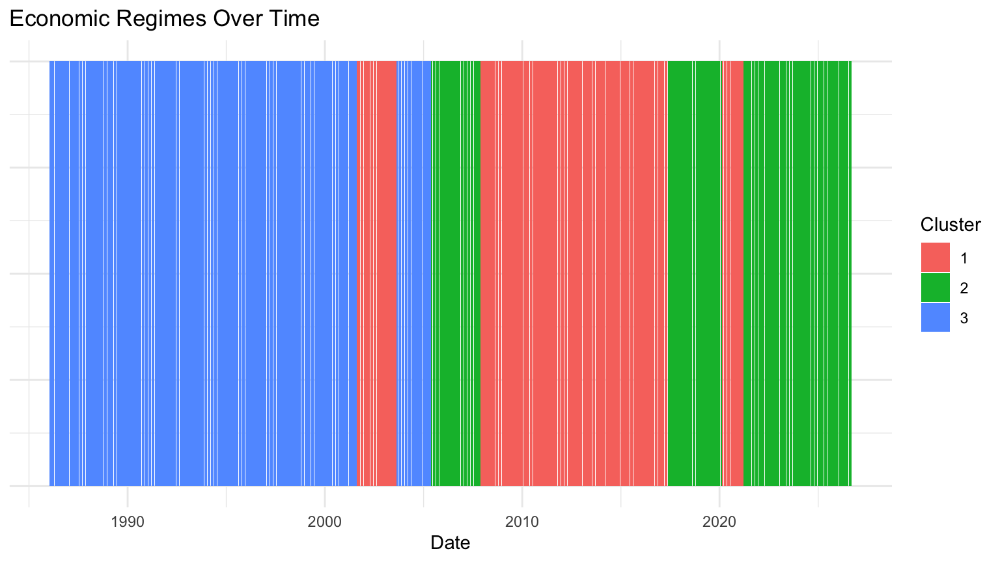
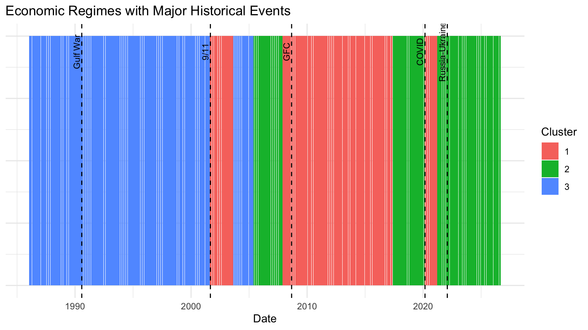
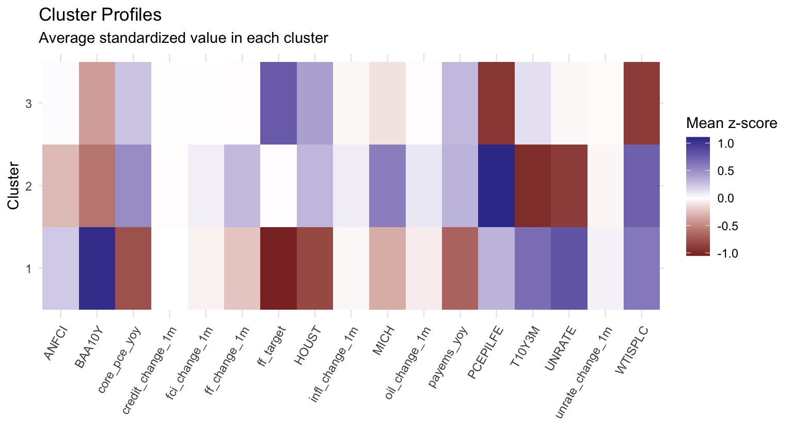

Code
data_rq2 <- df_final %>%
arrange(date)
data_rq2$policy_change <- as.numeric(data_rq2$policy_change)This chapter is the course-project team’s original analysis, written by teammates and kept as submitted. The only changes are shared data fixes and small cleanups (computed instead of hardcoded dates, clearer names); the methods were not revised for this portfolio. Known limitations:
The dataset is sorted in chronological order so the clustering results can later be interpreted as evolving regimes rather than disconnected groups.
data_rq2$ff_change_1m <- c(NA, diff(data_rq2$ff_target))
data_rq2$unrate_change_1m <- c(NA, diff(data_rq2$UNRATE))
data_rq2$oil_change_1m <- c(NA, diff(data_rq2$WTISPLC))
data_rq2$house_change_1m <- c(NA, diff(data_rq2$HOUST))
data_rq2$credit_change_1m <- c(NA, diff(data_rq2$BAA10Y))
data_rq2$fci_change_1m <- c(NA, diff(data_rq2$ANFCI))
data_rq2$infl_change_1m <- c(NA, diff(data_rq2$core_pce_yoy))Monthly changes were added so the clustering can reflect both the level of macroeconomic conditions and how quickly those conditions are shifting.
ff_target policy_change PCEPI
0.00000000 0.00000000 0.00000000
PCEPILFE MICH UNRATE
0.00000000 0.00000000 0.00000000
PAYEMS JTSJOL JTSQUR
0.00000000 0.36605317 0.36605317
INDPRO HOUST RRSFS
0.00000000 0.00000000 0.14723926
WTISPLC T5YIE DGS3MO
0.00000000 0.41717791 0.00000000
DGS2 DGS10 T10Y3M
0.00000000 0.00000000 0.00000000
BAA10Y ANFCI DTWEXBGS
0.00000000 0.00000000 0.49079755
core_pce_yoy unrate_lag1 payems_yoy
0.00000000 0.00000000 0.00000000
term_spread_10y_3m inflation_gap fomc_meetings
0.00000000 0.00000000 0.00000000
fomc_scheduled fomc_unscheduled days_since_last_fomc
0.00000000 0.00000000 0.00000000
ff_change_1m unrate_change_1m oil_change_1m
0.00204499 0.00204499 0.00204499
house_change_1m credit_change_1m fci_change_1m
0.00204499 0.00204499 0.00204499
infl_change_1m
0.00204499 Variables with more than 20% missingness were excluded from the initial numeric screening step to keep the clustering input reasonably complete.
cluster_vars_model <- c(
"ff_target",
"PCEPILFE",
"MICH",
"UNRATE",
"HOUST",
"T10Y3M",
"BAA10Y",
"ANFCI",
"WTISPLC",
"core_pce_yoy",
"payems_yoy",
"ff_change_1m",
"unrate_change_1m",
"oil_change_1m",
"credit_change_1m",
"fci_change_1m",
"infl_change_1m"
)
cluster_vars_extra <- c(
"policy_change",
"fomc_meetings",
"fomc_scheduled",
"fomc_unscheduled",
"days_since_last_fomc"
)
cluster_vars_model <- intersect(cluster_vars_model, names(data_rq2))
cluster_vars_extra <- intersect(cluster_vars_extra, names(data_rq2))
cluster_df <- data_rq2[, c("date", cluster_vars_model, cluster_vars_extra)]
cluster_df <- na.omit(cluster_df)
cluster_x <- cluster_df[, cluster_vars_model]
cluster_x_extra <- cluster_df[, cluster_vars_extra]
dates <- cluster_df$date
nrow(cluster_x)[1] 488The model variables are used for clustering itself, while the extra variables are kept for later interpretation of the resulting regimes.
Importance of components:
PC1 PC2 PC3 PC4 PC5 PC6 PC7
Standard deviation 1.9366 1.5715 1.4653 1.23129 1.16235 0.99696 0.92800
Proportion of Variance 0.2206 0.1453 0.1263 0.08918 0.07947 0.05847 0.05066
Cumulative Proportion 0.2206 0.3659 0.4922 0.58135 0.66083 0.71929 0.76995
PC8 PC9 PC10 PC11 PC12 PC13 PC14
Standard deviation 0.8977 0.86100 0.76652 0.75275 0.6253 0.52941 0.47606
Proportion of Variance 0.0474 0.04361 0.03456 0.03333 0.0230 0.01649 0.01333
Cumulative Proportion 0.8174 0.86096 0.89553 0.92886 0.9518 0.96834 0.98167
PC15 PC16 PC17
Standard deviation 0.41871 0.30242 0.21170
Proportion of Variance 0.01031 0.00538 0.00264
Cumulative Proportion 0.99198 0.99736 1.00000 [1] 0.2206063 0.3658730 0.4921730 0.5813541 0.6608274 0.7192934 0.7699517
[8] 0.8173561 0.8609630 0.8955252 0.9288561 0.9518530 0.9683399 0.9816713
[15] 0.9919840 0.9973638 1.0000000Number of PCs explaining at least 80% variance: 8 PC1 PC2 PC3 PC4 PC5 PC6
[1,] -1.0259517 3.211953 0.67649946 -0.59071783 0.70255590 -1.48349683
[2,] -0.6338084 3.559604 1.05020233 -0.01915887 -0.03732054 0.86334853
[3,] -0.8350464 2.968623 0.07028865 -0.49580835 -0.29027309 1.10050453
[4,] -0.5377608 2.769252 -0.89789935 -1.10964381 1.19891188 0.04259556
[5,] -1.0996290 2.517992 0.16423705 -0.82477412 -0.83431362 -0.31970448
[6,] -0.3892024 3.258946 1.31639438 -0.37457074 -0.28944675 0.90387550
PC7 PC8
[1,] 0.87630751 -0.85137467
[2,] -0.60581277 -1.09859599
[3,] -0.60700865 -0.40404457
[4,] -0.04855582 -0.01783271
[5,] 0.18925050 1.00332560
[6,] 0.06439124 -0.69309440PCA is used to reduce dimensionality while retaining most of the variation in the clustering inputs.


# Silhouette diagnostics over K_RANGE; k itself is a setting (K_CLUSTERS).
set.seed(123)
dist_pc <- dist(pc_scores)
avg_sil <- sapply(K_RANGE, function(kk) {
fit <- kmeans(pc_scores, centers = kk, nstart = 50)
mean(silhouette(fit$cluster, dist_pc)[, "sil_width"])
})
data.frame(k = K_RANGE, avg_silhouette = round(avg_sil, 3)) k avg_silhouette
1 2 0.236
2 3 0.212
3 4 0.231
4 5 0.234
5 6 0.201
6 7 0.210
7 8 0.214 date cluster policy_change fomc_meetings fomc_scheduled
1 1986-02-01 3 0 1 1
2 1986-03-01 3 1 0 0
3 1986-04-01 3 1 2 1
4 1986-05-01 3 1 1 1
5 1986-06-01 3 1 0 0
6 1986-07-01 3 1 1 1
fomc_unscheduled days_since_last_fomc
1 0 47
2 0 18
3 1 49
4 0 10
5 0 12
6 0 42The clustering uses k-means on the retained principal components. The analysis uses k = 3 clusters. Average silhouette widths for k = 2 to 8 are all between 0.20 and 0.24, which indicates weak cluster structure, so k is kept as an explicit choice rather than picked by silhouette.
plot_df <- data.frame(
date = dates,
PC1 = pca$x[, 1],
PC2 = pca$x[, 2],
cluster = factor(km$cluster)
)
ggplot(plot_df, aes(x = PC1, y = PC2, color = cluster)) +
geom_point(size = 2, alpha = 0.7) +
geom_path(aes(group = 1), color = "gray70", alpha = 0.3, linewidth = 0.4) +
theme_minimal() +
labs(
title = "Clusters in PCA Space",
subtitle = "Points connected in time order",
x = "PC1",
y = "PC2"
)

These plots show both the separation of regimes in reduced-dimensional space and the way regime structure evolves over time.

This plot gives a compact time-line view of how regime membership changes across the sample.
event_df <- data.frame(
date = as.Date(c(
"1990-08-01", # Gulf War
"2001-09-01", # 9/11
"2008-09-01", # GFC / Lehman
"2020-03-01", # COVID shock
"2022-02-01" # Russia-Ukraine war
)),
label = c(
"Gulf War",
"9/11",
"GFC",
"COVID",
"Russia-Ukraine"
)
)
ggplot(result, aes(x = date, y = 1, fill = cluster)) +
geom_tile(height = 0.8) +
geom_vline(
data = event_df,
aes(xintercept = as.numeric(date)),
linetype = "dashed"
) +
geom_text(
data = event_df,
aes(x = date, y = 1.35, label = label),
angle = 90,
vjust = -0.3,
size = 3,
inherit.aes = FALSE
) +
theme_minimal() +
theme(
axis.title.y = element_blank(),
axis.text.y = element_blank(),
axis.ticks.y = element_blank()
) +
labs(
title = "Economic Regimes with Major Historical Events",
x = "Date",
fill = "Cluster"
)
Major historical events are overlaid on the regime timeline to assess whether regime changes line up with well-known macroeconomic disruptions.
result_spell <- result %>%
mutate(
change_flag = cluster != lag(cluster, default = first(cluster)),
spell_id = cumsum(change_flag)
)
spell_summary <- result_spell %>%
group_by(spell_id, cluster) %>%
summarise(
start = min(date),
end = max(date),
months = n(),
.groups = "drop"
) %>%
arrange(start)
print(spell_summary)# A tibble: 8 × 5
spell_id cluster start end months
<int> <fct> <date> <date> <int>
1 0 3 1986-02-01 2001-08-01 187
2 1 1 2001-09-01 2003-08-01 24
3 2 3 2003-09-01 2005-05-01 21
4 3 2 2005-06-01 2007-11-01 30
5 4 1 2007-12-01 2017-05-01 114
6 5 2 2017-06-01 2020-02-01 33
7 6 1 2020-03-01 2021-03-01 13
8 7 2 2021-04-01 2026-09-01 66Spell analysis helps show whether the clusters behave like persistent macroeconomic regimes rather than very short-lived fluctuations.
# A tibble: 3 × 18
cluster ff_target PCEPILFE MICH UNRATE HOUST T10Y3M BAA10Y ANFCI WTISPLC
<fct> <dbl> <dbl> <dbl> <dbl> <dbl> <dbl> <dbl> <dbl> <dbl>
1 1 0.594 91.7 2.92 7.02 1047. 2.28 3.00 -0.119 66.8
2 2 3.32 107. 3.60 4.18 1462. 0.219 1.86 -0.439 70.6
3 3 5.34 66.9 3.08 5.63 1500. 1.61 1.99 -0.256 22.3
# ℹ 8 more variables: core_pce_yoy <dbl>, payems_yoy <dbl>, ff_change_1m <dbl>,
# unrate_change_1m <dbl>, oil_change_1m <dbl>, credit_change_1m <dbl>,
# fci_change_1m <dbl>, infl_change_1m <dbl>cluster_profile_scaled <- data.frame(cluster_scaled, cluster = factor(km$cluster)) %>%
group_by(cluster) %>%
summarise(across(everything(), mean), .groups = "drop")
cluster_profile_long <- cluster_profile_scaled %>%
pivot_longer(-cluster, names_to = "variable", values_to = "mean_z")
ggplot(cluster_profile_long, aes(x = variable, y = cluster, fill = mean_z)) +
geom_tile() +
scale_fill_gradient2() +
theme_minimal() +
theme(axis.text.x = element_text(angle = 60, hjust = 1)) +
labs(
title = "Cluster Profiles",
subtitle = "Average standardized value in each cluster",
x = "",
y = "Cluster",
fill = "Mean z-score"
)
These tables and heatmaps help interpret the economic meaning of each cluster in terms of inflation, labor markets, financial conditions, and policy timing.
# A tibble: 3 × 6
cluster policy_change fomc_meetings fomc_scheduled fomc_unscheduled
<fct> <dbl> <dbl> <dbl> <dbl>
1 1 0.106 0.821 0.662 0.159
2 2 0.295 0.690 0.667 0.0233
3 3 0.385 0.976 0.673 0.303
# ℹ 1 more variable: days_since_last_fomc <dbl>This summary adds policy-related interpretation variables that were not used directly to build the clusters.
event_windows <- data.frame(
event = c("Gulf War", "Dot-com / 9-11", "GFC", "COVID", "Russia-Ukraine"),
start = as.Date(c("1990-08-01", "2001-03-01", "2007-12-01", "2020-03-01", "2022-02-01")),
end = as.Date(c("1991-03-01", "2002-12-01", "2009-06-01", "2020-12-01", "2023-12-01"))
)
event_cluster_summary <- lapply(1:nrow(event_windows), function(i) {
temp <- result[result$date >= event_windows$start[i] &
result$date <= event_windows$end[i], ]
tb <- table(temp$cluster)
data.frame(
event = event_windows$event[i],
dominant_cluster = names(which.max(tb)),
dominant_share = as.numeric(max(tb) / sum(tb))
)
})
event_cluster_summary <- do.call(rbind, event_cluster_summary)
print(event_cluster_summary) event dominant_cluster dominant_share
1 Gulf War 3 1.0000000
2 Dot-com / 9-11 1 0.7272727
3 GFC 1 1.0000000
4 COVID 1 1.0000000
5 Russia-Ukraine 2 1.0000000The event-window summary checks whether each major shock period is dominated by a particular regime.
---
title: "The Regimes: Grouping Macro Conditions (RQ2)"
---
```{r}
#| include: false
source("R/settings.R")
source("R/prepare_data.R")
```
::: {.callout-note}
## Original course-project chapter
This chapter is the course-project team's original analysis, written by
teammates and kept as submitted. The only changes are shared data fixes
and small cleanups (computed instead of hardcoded dates, clearer names);
the methods were not revised for this portfolio. Known limitations:
- **Trending inputs.** Several clustering inputs are levels that trend over
decades (the core PCE price index, nominal oil prices, housing starts,
the target itself). They can dominate the principal components, so
clusters may separate eras rather than economic conditions.
- **Weak cluster structure.** Average silhouette widths are low and similar
for every k tried (see below), so the number of clusters is a fixed
setting rather than something the data chooses.
- **No stability check.** Clusters are not re-checked across random starts,
sub-periods or alternative variable sets.
- **Fitted on the full sample.** Each month's regime label uses data from
later years, which is fine for describing history but means the labels
cannot be used as a predictor without refitting on past data only.
:::
## Data Preparation
```{r}
data_rq2 <- df_final %>%
arrange(date)
data_rq2$policy_change <- as.numeric(data_rq2$policy_change)
```
The dataset is sorted in chronological order so the clustering results can later be interpreted as evolving regimes rather than disconnected groups.
## Event-Sensitive Feature Construction
```{r}
data_rq2$ff_change_1m <- c(NA, diff(data_rq2$ff_target))
data_rq2$unrate_change_1m <- c(NA, diff(data_rq2$UNRATE))
data_rq2$oil_change_1m <- c(NA, diff(data_rq2$WTISPLC))
data_rq2$house_change_1m <- c(NA, diff(data_rq2$HOUST))
data_rq2$credit_change_1m <- c(NA, diff(data_rq2$BAA10Y))
data_rq2$fci_change_1m <- c(NA, diff(data_rq2$ANFCI))
data_rq2$infl_change_1m <- c(NA, diff(data_rq2$core_pce_yoy))
```
Monthly changes were added so the clustering can reflect both the level of macroeconomic conditions and how quickly those conditions are shifting.
## Missingness Screening
```{r}
num_data <- data_rq2[, setdiff(names(data_rq2), "date")]
num_data <- num_data[, sapply(num_data, is.numeric)]
na_share <- colMeans(is.na(num_data))
na_share
```
```{r}
num_data <- num_data[, na_share <= 0.20]
```
Variables with more than 20% missingness were excluded from the initial numeric screening step to keep the clustering input reasonably complete.
## Variable Selection for Clustering
```{r}
cluster_vars_model <- c(
"ff_target",
"PCEPILFE",
"MICH",
"UNRATE",
"HOUST",
"T10Y3M",
"BAA10Y",
"ANFCI",
"WTISPLC",
"core_pce_yoy",
"payems_yoy",
"ff_change_1m",
"unrate_change_1m",
"oil_change_1m",
"credit_change_1m",
"fci_change_1m",
"infl_change_1m"
)
cluster_vars_extra <- c(
"policy_change",
"fomc_meetings",
"fomc_scheduled",
"fomc_unscheduled",
"days_since_last_fomc"
)
cluster_vars_model <- intersect(cluster_vars_model, names(data_rq2))
cluster_vars_extra <- intersect(cluster_vars_extra, names(data_rq2))
cluster_df <- data_rq2[, c("date", cluster_vars_model, cluster_vars_extra)]
cluster_df <- na.omit(cluster_df)
cluster_x <- cluster_df[, cluster_vars_model]
cluster_x_extra <- cluster_df[, cluster_vars_extra]
dates <- cluster_df$date
nrow(cluster_x)
```
The model variables are used for clustering itself, while the extra variables are kept for later interpretation of the resulting regimes.
## Correlation Check on Final Clustering Inputs
```{r}
cor_mat2 <- cor(cluster_x)
corrplot(cor_mat2, method = "color", tl.cex = 0.6)
```
```{r}
remove_auto <- findCorrelation(cor_mat2, cutoff = 0.9, names = TRUE)
cat("Variables removed due to high correlation:\n")
print(remove_auto)
cluster_x2 <- cluster_x[, !names(cluster_x) %in% remove_auto]
```
## Scaling and PCA
```{r}
cluster_scaled <- scale(cluster_x2)
pca <- prcomp(cluster_scaled)
summary(pca)
```
```{r}
plot(pca, type = "l", main = "Scree Plot")
```
```{r}
cum_var <- cumsum(pca$sdev^2 / sum(pca$sdev^2))
cum_var
```
```{r}
n_pc <- which(cum_var >= 0.80)[1]
cat("Number of PCs explaining at least 80% variance:", n_pc, "\n")
pc_scores <- pca$x[, 1:n_pc, drop = FALSE]
head(pc_scores)
```
PCA is used to reduce dimensionality while retaining most of the variation in the clustering inputs.
## Clustering
```{r}
fviz_nbclust(pc_scores, kmeans, method = "wss")
fviz_nbclust(pc_scores, kmeans, method = "silhouette")
```
```{r}
# Silhouette diagnostics over K_RANGE; k itself is a setting (K_CLUSTERS).
set.seed(123)
dist_pc <- dist(pc_scores)
avg_sil <- sapply(K_RANGE, function(kk) {
fit <- kmeans(pc_scores, centers = kk, nstart = 50)
mean(silhouette(fit$cluster, dist_pc)[, "sil_width"])
})
data.frame(k = K_RANGE, avg_silhouette = round(avg_sil, 3))
k <- K_CLUSTERS
set.seed(123)
km <- kmeans(pc_scores, centers = k, nstart = 100)
result <- data.frame(
date = dates,
cluster = factor(km$cluster),
cluster_x_extra
)
head(result)
```
The clustering uses k-means on the retained principal components. The analysis uses k = `r k` clusters. Average silhouette widths for k = `r min(K_RANGE)` to `r max(K_RANGE)` are all between `r sprintf("%.2f", min(avg_sil))` and `r sprintf("%.2f", max(avg_sil))`, which indicates weak cluster structure, so k is kept as an explicit choice rather than picked by silhouette.
## Cluster Visualization
```{r}
plot_df <- data.frame(
date = dates,
PC1 = pca$x[, 1],
PC2 = pca$x[, 2],
cluster = factor(km$cluster)
)
ggplot(plot_df, aes(x = PC1, y = PC2, color = cluster)) +
geom_point(size = 2, alpha = 0.7) +
geom_path(aes(group = 1), color = "gray70", alpha = 0.3, linewidth = 0.4) +
theme_minimal() +
labs(
title = "Clusters in PCA Space",
subtitle = "Points connected in time order",
x = "PC1",
y = "PC2"
)
```
```{r}
pc_time_df <- data.frame(
date = dates,
PC1 = pca$x[, 1],
cluster = factor(km$cluster)
)
ggplot(pc_time_df, aes(x = date, y = PC1, color = cluster)) +
geom_line(linewidth = 0.8) +
theme_minimal() +
labs(
title = "PC1 Over Time",
x = "Date",
y = "PC1"
)
```
These plots show both the separation of regimes in reduced-dimensional space and the way regime structure evolves over time.
## Regimes Over Time
```{r}
ggplot(result, aes(x = date, y = 1, fill = cluster)) +
geom_tile(height = 0.8) +
theme_minimal() +
theme(
axis.title.y = element_blank(),
axis.text.y = element_blank(),
axis.ticks.y = element_blank()
) +
labs(
title = "Economic Regimes Over Time",
x = "Date",
fill = "Cluster"
)
```
This plot gives a compact time-line view of how regime membership changes across the sample.
## Regimes and Historical Events
```{r}
event_df <- data.frame(
date = as.Date(c(
"1990-08-01", # Gulf War
"2001-09-01", # 9/11
"2008-09-01", # GFC / Lehman
"2020-03-01", # COVID shock
"2022-02-01" # Russia-Ukraine war
)),
label = c(
"Gulf War",
"9/11",
"GFC",
"COVID",
"Russia-Ukraine"
)
)
ggplot(result, aes(x = date, y = 1, fill = cluster)) +
geom_tile(height = 0.8) +
geom_vline(
data = event_df,
aes(xintercept = as.numeric(date)),
linetype = "dashed"
) +
geom_text(
data = event_df,
aes(x = date, y = 1.35, label = label),
angle = 90,
vjust = -0.3,
size = 3,
inherit.aes = FALSE
) +
theme_minimal() +
theme(
axis.title.y = element_blank(),
axis.text.y = element_blank(),
axis.ticks.y = element_blank()
) +
labs(
title = "Economic Regimes with Major Historical Events",
x = "Date",
fill = "Cluster"
)
```
Major historical events are overlaid on the regime timeline to assess whether regime changes line up with well-known macroeconomic disruptions.
## Regime Duration
```{r}
result_spell <- result %>%
mutate(
change_flag = cluster != lag(cluster, default = first(cluster)),
spell_id = cumsum(change_flag)
)
spell_summary <- result_spell %>%
group_by(spell_id, cluster) %>%
summarise(
start = min(date),
end = max(date),
months = n(),
.groups = "drop"
) %>%
arrange(start)
print(spell_summary)
```
Spell analysis helps show whether the clusters behave like persistent macroeconomic regimes rather than very short-lived fluctuations.
## Cluster Profiles
```{r}
cluster_profile <- data.frame(cluster_x2, cluster = factor(km$cluster)) %>%
group_by(cluster) %>%
summarise(across(everything(), mean), .groups = "drop")
print(cluster_profile)
```
```{r}
cluster_profile_scaled <- data.frame(cluster_scaled, cluster = factor(km$cluster)) %>%
group_by(cluster) %>%
summarise(across(everything(), mean), .groups = "drop")
cluster_profile_long <- cluster_profile_scaled %>%
pivot_longer(-cluster, names_to = "variable", values_to = "mean_z")
ggplot(cluster_profile_long, aes(x = variable, y = cluster, fill = mean_z)) +
geom_tile() +
scale_fill_gradient2() +
theme_minimal() +
theme(axis.text.x = element_text(angle = 60, hjust = 1)) +
labs(
title = "Cluster Profiles",
subtitle = "Average standardized value in each cluster",
x = "",
y = "Cluster",
fill = "Mean z-score"
)
```
These tables and heatmaps help interpret the economic meaning of each cluster in terms of inflation, labor markets, financial conditions, and policy timing.
## Extra Variable Summary
```{r}
if (ncol(cluster_x_extra) > 0) {
extra_summary <- data.frame(cluster_x_extra, cluster = factor(km$cluster)) %>%
group_by(cluster) %>%
summarise(across(everything(), mean), .groups = "drop")
print(extra_summary)
}
```
This summary adds policy-related interpretation variables that were not used directly to build the clusters.
## Event Window Summary
```{r}
event_windows <- data.frame(
event = c("Gulf War", "Dot-com / 9-11", "GFC", "COVID", "Russia-Ukraine"),
start = as.Date(c("1990-08-01", "2001-03-01", "2007-12-01", "2020-03-01", "2022-02-01")),
end = as.Date(c("1991-03-01", "2002-12-01", "2009-06-01", "2020-12-01", "2023-12-01"))
)
event_cluster_summary <- lapply(1:nrow(event_windows), function(i) {
temp <- result[result$date >= event_windows$start[i] &
result$date <= event_windows$end[i], ]
tb <- table(temp$cluster)
data.frame(
event = event_windows$event[i],
dominant_cluster = names(which.max(tb)),
dominant_share = as.numeric(max(tb) / sum(tb))
)
})
event_cluster_summary <- do.call(rbind, event_cluster_summary)
print(event_cluster_summary)
```
The event-window summary checks whether each major shock period is dominated by a particular regime.